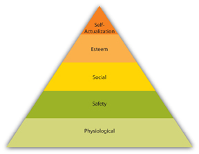
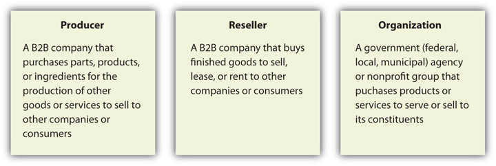
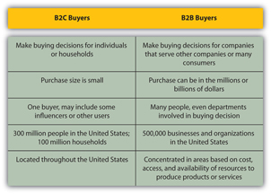
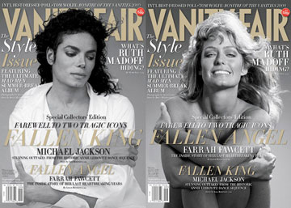
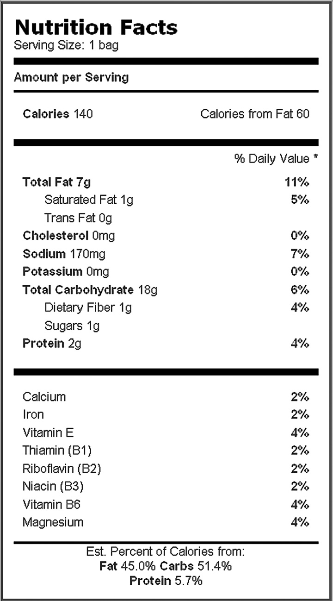
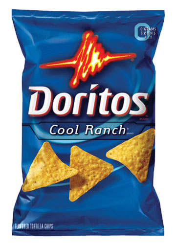
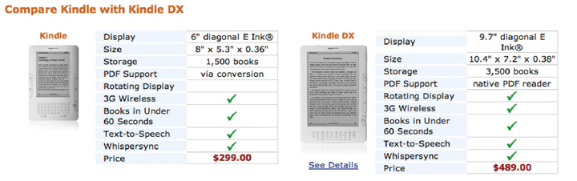

Meet Rachel Gordon. Rachel has been in sales for three years and has learned that selling is about understanding the customer’s needs and wants. Rachel sells advertising and marketing programs to businesses such as casinos, restaurants, car dealerships, and local businesses. Rachel graduated from Cornell University with a degree in fashion merchandising. After two years in retail, she learned that selling is her passion.
Ride along with Rachel and learn how she identifies the decision maker versus the influencer in a sales call and why each is important to making the sale.
(click to see video)You walk into an Abercrombie & Fitch store at the mall, and without thinking about it, you turn to the right and make your way through the denim, past the belts, and to the sweaters. You are so engaged in the experience that you didn’t even realize that the huge mural at the entrance to the store serves a purpose other than to make you look twice at the hot model in the larger-than-life photo. Before you know it, one of the oh-so-gorgeous salespeople dressed in Abercrombie from head to toe approaches you with a smile. “These hoodies are awesome,” she says as you pick up the pale blue one.
Shopping. It’s the national pastime for some but a detested necessity for others. Whether you love shopping (“Oh, that is sooooooo cute!”) or do everything to avoid it (“I’m not going to the mall, no matter what”), it is a major source of spending in the United States. In fact, the retail industry generated $4.475 trillion in sales in 2008, including everything from products and services in retail stores and e-commerce to food service and automotive.Barbara Farfan, “Retail Industry Information: Overview of Facts, Research, Data, and Trivia,” About.com, http://retailindustry.about.com/od/statisticsresearch/p/retailindustry.htm (accessed August 3, 2009). That’s a lot of selling—and a lot of buying. But what makes you stop and pick up one sweater but not another? What makes you buy a pair of jeans you weren’t even looking for? What makes you walk out of the store spending more than you had planned?
The science of consumer behavior describes and even defines how you shop and, more importantly, why you buy. Smart retailers study consumer behavior patterns and lay out their stores and merchandise accordingly. For example, did you know that 86 percent of women look at price tags when they shop, while only 72 percent of men do?Paco Underhill, Why We Buy: The Science of Shopping (New York: Touchstone, 1999), 99. And did you know that the average shopper doesn’t actually notice anything that’s in the entrance of a store? According to Paco Underhill, famous marketer, CEO and founder of EnviroSell, and author of the book Why We Buy: The Science of Shopping, consumers don’t actually begin shopping until a certain point after they enter the store. That’s why smart retailers include a “transition zone” at the entry to their store; it allows customers to get their bearings and choose their shopping paths. In other words, products, signs, and displays that are in the very front of the store might not be seen if there is not a transition for the customers when they enter. In the case of Abercrombie & Fitch, the transition is the space just inside the entrance that includes the humongous photo of the Abercrombie model du jour. When you go into Hollister, it’s the outside porch that serves the same purpose; it’s a transition that allows you to get your focus and plot your course in the store, even if you don’t consciously realize it.
Think about the last time you went into a grocery store or drug store; you might not have noticed anything until you were well inside the store, which means that the merchandise and signs that were displayed in the area before you got your bearings were virtually invisible to you.Paco Underhill, Why We Buy: The Science of Shopping (New York: Touchstone, 1999), 46. Based on consumer research, there’s a high likelihood that you turned right when you entered the store. Take note the next time you go shopping; chances are, you’ll turn right after you walk in.Paco Underhill, Why We Buy: The Science of Shopping (New York: Touchstone, 1999), 46.
Understanding how and why customers buy can make a significant difference in how you sell. Is the product a considered purchase, like a computer or car, or an impulse buy, like a sweater or music download? Is the product bought frequently, like an energy drink, or only once every few years or even once in a lifetime, like a car or a college education? For each of these products, the customer goes through a buying process. Understanding the customer and the buying process can make your selling efforts successful. This video featuring Martin Lindstrom, the author of Buyology: Truths and Lies about Why We Buy, highlights the science of consumer behavior in selling and marketing
Video Book Review
(click to see video)Buyology: Truths and Lies about Why We Buy
Source: BNET
Think of something you need, like an annual medical checkup, a new apartment because your lease is up, or even food to survive. There are some products and services you purchase solely because you can’t exist without them. Now think about something you want: a new pair of jeans, an iPhone, tickets to a concert. There is a significant difference in what motivates you to buy products and services you need, compared to those you want.
NeedsProducts or services that are essential in order to survive. are essentials, those products and services you literally cannot live without. Food, shelter, clothing, transportation, and health care are all examples of needs. WantsProducts, services, or activities that enhance the quality of life, but which are not essential for survival., on the other hand, are products, services, and activities that can improve your quality of life; you don’t need them to exist, but rather you desire to have them because you think they will make you happy.Kristin Biekkola, “Needs versus Wants,” slide show, Wisc-Online.com, http://www.wisc-online.com/objects/index_tj.asp?objID=ABM3302 (accessed August 2, 2009). Cell phones, vacations, sporting events, restaurants, amusement parks, cable television, and fashion are all examples of wants. People are motivated differently depending on if they are making a purchase for a need or a want.
Needs and wants have different motivations. Think about buying a car; you could focus on the functional attributes of the car such as miles per gallon, maintenance costs, and safety ratings. Those are considered utilitarian needsFunctional needs that are served by objective, tangible attributes of products or services., or the objective, tangible aspects of a product or service.Michael R. Solomon, Consumer Behavior: Buying, Having, and Being, 8th ed. (Upper Saddle River, NJ: Pearson Prentice Hall, 2009), 133. So, if those were your only needs, you might choose a Smart Fortwo, Ford Focus, or Toyota Prius. But you might want to have something a bit sportier, maybe even hipper, to get around campus, and you might choose a Mini Cooper, a Scion, or even a Jeep. These cars would do more than simply provide transportation; they would meet your hedonic needsEmotional needs that are served by products or services that bring pleasure., which are subjective aspects of a product or service.Michael R. Solomon, Consumer Behavior: Buying, Having, and Being, 8th ed. (Upper Saddle River, NJ: Pearson Prentice Hall, 2009), 133. You might choose to buy a Mini Cooper because you can customize the design online. That would certainly meet a need other than providing basic transportation. Some people buy a BMW because they want the status that goes with owning that make of car, or perhaps they think that having a Mercedes-Benz means they have arrived.
When you understand the difference between needs and wants and between utility needs and hedonic needs, you are better able to tailor your selling communications. Listen to consumer behavior expert Dr. Michael R. Solomon discuss the difference between needs and wants and the impact it has on selling.
When Hurricane Katrina hit the United States on August 28, 2005, the Gulf Coast was devastated. Thousands of people were stranded for days, some without food, water, or shelter due to overwhelming flooding. Almost two thousand people lost their lives in the natural disaster.United States Department of Health and Human Services, http://www.hhs.gov/disasters/emergency/naturaldisasters/hurricanes/katrina/index.html (accessed August 2, 2009). During those horrible days and in the aftermath, those who were affected by the catastrophe did not care what kind of car they drove, what anyone did for a living, or if they forgot to sign up for French or scuba lessons. They were focused on the basics: food, shelter, and clothing.
This tragedy is a demonstration of exactly how Maslow’s hierarchy of needsThe behavior theory that recognizes that people are motivated by their most basic needs first; only after those needs are met do they strive to meet higher-level needs. works. Abraham Maslow is among the most renowned psychologists of the twentieth century. His theory explains human behavior in simple terms: A hierarchy of needs that begins with the most basic of physiological needsThe most basic elements required to survive such as food, shelter, and clothing. (e.g., food, water, shelter, and clothing) motivates people, and when the lowest-level needs are satisfied, they are no longer motivators.[citation redacted per publisher request].
During the days after Hurricane Katrina hit, people were rescued and provided with water, food, and shelter. Many were relocated to temporary housing or even to housing outside the affected areas. It was not until after the physiological needs were met that people became concerned about the next level of needs on Maslow’s hierarchy: safety needsConcerns for personal security and well-being.. Looting of shops in some of the cities began to occur, and there was even concern that the police force in some cities was not taking an active role in arresting those who were breaking the law.Associated Press, “Looters Take Advantage of New Orleans Mess,” msnbc.com, August 30, 2005, http://www.msnbc.msn.com/id/9131493 (accessed August 2, 2009). The people of the Gulf Coast were no longer motivated by simply getting water, food, or shelter; they had moved up Maslow’s hierarchy and were concerned about their personal security and well-being.
Figure 6.3
Maslow’s hierarchy of needs demonstrates that humans fill higher needs only after lower needs are met.
As the days and weeks passed after Hurricane Katrina hit, its victims wanted to get back to their normal lives. They searched for options to put their children back in school, ways to get jobs, and options to rebuild their lives. By Christmas 2005, people stopped to celebrate the holiday together. According to a story reported by CBS Evening News on December 25, 2005, about the Christmas gatherings in New Orleans, “The will to be home for the holidays outweighed everything else.”Joel Roberts, “Christmas After Katrina,” CBS Evening News, December 25, 2005, http://www.cbsnews.com/stories/2005/12/25/eveningnews/main1165360.shtml (accessed August 2, 2009). By this time, they were motivated by social needsBonds or attachments to other people and feelings of love and belonging., or the need to belong and have an attachment or bond to others.[citation redacted per publisher request].
Slowly but surely, people began to rebuild their lives and their cities. People took on leadership roles and began to take recovery to the next level. Even people who were hundreds of miles away from the hurricane-ravaged area wanted to help. Volunteers from all over the country began to make the pilgrimage to the Gulf Coast to help in any way they could. In fact, volunteer vacations to help rebuild cities such as New Orleans became commonplace and are still going on today.Sheryl Kane, “Volunteer Vacations: Rebuilding New Orleans,” June 26, 2009, SingleMindedWomen, http://singlemindedwomen.com/2009/06/rebuilding-new-orleans (accessed August 2, 2009). This is an example of esteem needsFeelings of being respected and appreciated by one’s peers., or the need to feel respected and appreciated by one’s peers. Although volunteers were motivated by social needs and the need to help their fellow human beings, they found that they were also greatly appreciated for their efforts.
Although recovery will be going on for years to come, many of the people affected by the destruction of Hurricane Katrina are striving for self-actualizationFocus on learning new skills, taking on new challenges, and “being all you can be.”, which focuses on learning new skills, taking on new challenges, and “being all you can be.”[citation redacted per publisher request]. John and Starr Chapman are perfect examples of this; their restaurant, Chappy’s Seafood Restaurant, was lost in the hurricane. The couple relocated to Nashville, Tennessee, and in 2006, opened Chappy’s on Church Street. Although it was challenging and overwhelming at times, the husband-and-wife team is not only surviving but also thriving after this life-changing experience.Joy Messer, “Survivors of Hurricane Katrina Overcome Adversity and Open ‘Chappy’s on Church Street,’” July 23, 2008, Associated Content, http://www.associatedcontent.com/article/887343/survivors_of_hurricane_katrina_overcome.html?cat=22 (accessed August 2, 2009).
Self-Actualization Means Help for Others
Nikki Olyai, president and CEO of Innovision Technologies, recently made a significant investment for her company and purchased new software and hardware. Her buying philosophy? Nikki looks for a strong value system, trust, commitment, a proactive approach to helping her solve her business problems, and cost-effectiveness. But she expects more from a vendor and business partner; she gives extra consideration to vendors who have demonstrated a commitment to community service and development. Nikki believes that businesses and their vendors need to give back to the communities they serve.Mary Cantando, “How Savvy Women Entrepreneurs Make Buying Decisions,” Women Entrepreneurs, Inc., January 1, 2005, http://www.perfectbusiness.com/articles/newsarticle.cfm?newsID=948&news=1 (accessed August 1, 2009).
This all comes together at the point of sale, whether you are selling in business-to-consumer (B2C) or business-to-business (B2B) environments. When you understand the motivation of your customer, you can customize your solution and your message to meet their needs, emotions, and motivations. Consider the Hurricane Katrina example; would you attempt to sell fine jewelry, pitch the benefits of a landscaping service, or suggest a home theater system to someone in New Orleans on August 29, 2005? Probably not. People were focused on their most basic needs at that time, and none of these products or services would have been appropriate to sell. Although this may seem like an extreme example, it’s a good way to remember to look at the world through your customer’s eyes, as you’ll see a completely different view. Now that you can see what motivates people to buy, it’s time to learn who is buying. Although the buying process is similar for B2C and B2B, there are some distinct differences that can make a difference in the way you sell.
Think back to your visit to the Abercrombie & Fitch store. It’s pretty obvious that you are the customer, or in marketing parlance, you are the consumerThe end user of a product or service., the end user of the product or service. You might be shopping for yourself or buying a gift for a family member or a friend. Either way, you (or the person to whom you are giving the product) are the ultimate consumer, which is what defines B2C buying. So, whether you are buying a cell phone and service at a Verizon store, a music download from iTunes, or a burger and fries at Burger King, you are buying in the B2C arena. Even though you may behave differently than your brother or roommate in terms of your purchasing decisions, you are all described as B2C customers because you are the ultimate consumer of the products or services you buy.
Clothes for your avatar, “bling” for your online profile, or a virtual birthday cupcake are all reasons to make digital purchases virtually: paying real money for something that exists only online. Facebook, SecondLife.com, and Stardolls.com are just a few Web sites that give users the option to buy virtual goods. Why do people buy things that aren’t even real? For some of the same reasons people buy the real thing: to be able to do more (i.e., increase functionality), build relationships, and establish identity.Jeremy Liew, “Why Do People Buy Virtual Goods?” Wall Street Journal, February 9, 2009, http://online.wsj.com/article/SB123395867963658435.html (accessed August 1, 2009).
With B2B customers, sometimes referred to as organizational (or institutional) marketsAnother term for B2B buying or selling, which means selling products or services to another company rather than selling directly to the ultimate consumer., there are several different types of situations that define needs and purchasing behavior. Some companies buy products to sell directly to consumers, whereas others purchase products as ingredients or components to produce their product. Still other companies lease products or services, while others serve the public, such as government or nonprofit organizations. Each of these different types of companies and organizations has different needs and requirements that impact the buying process.Michael R. Solomon, Greg W. Marshall, and Elnora W. Stuart, Marketing: Real People, Real Choices, 5th ed. (Upper Saddle River, NJ: Pearson Prentice Hall, 2008), 179.
Companies that buy products to make or build a product or service to sell for a profit are called producersA B2B company that purchases parts, products, or ingredients for the production of other goods or services to sell at a profit.. For example, in the case of Reebok, the company purchases components for its athletic shoes from a variety of vendors around the world. Reebok uses the components to manufacture the shoes and sell them to retailers such as Foot Locker, which in turn, sell the shoes to consumers like you. In this example, Reebok is engaged in B2B buying as a producer because the company purchases parts or materials to make shoes and then sells them to other companies.Barton A. Weitz, Stephen B. Castleberry, and John F. Tanner, Jr., Selling: Building Partnerships, 7th ed. (New York: McGraw-Hill Irwin, 2009), 86. Reebok is a B2B purchaser but not a B2C seller; the company markets its brand directly to B2C consumers to gain recognition and drive consumers to participate in B2C buying at retailers that carry its brand.
Figure 6.4 Types of B2B Buyers
ResellersA company that buys finished goods, to sell, lease, or rent to other companies or consumers. purchase finished goods to sell, lease, or rent to B2B or B2C purchasers. In the example above, Foot Locker is a reseller because the company buys finished products from manufacturers such as Reebok, Nike, New Balance, Ryka, and others. In other words, Foot Locker doesn’t manufacture products but rather buys them from other companies to sell them. It’s important to note that although Foot Locker buys in the B2B arena as a reseller, the company sells in the B2C arena because it sells its products to the ultimate consumer.Michael R. Solomon, Greg W. Marshall, and Elnora W. Stuart, Marketing: Real People, Real Choices, 5th ed. (Upper Saddle River, NJ: Pearson Prentice Hall, 2008), 180. Besides retailers, other types of resellers are wholesalers, brokers, and agents.
organizationsFederal, local, and municipal government bodies and nonprofit groups such as churches, schools, American Red Cross, Salvation Army, and others that purchase products or services to serve or sell to constituents. include government bodies (federal, local, and municipal, as well as the District of Columbia) and nonprofit groups (churches, hospitals, colleges, and cause-related groups like the American Red Cross). The government is a huge consumer, using over $1 trillion in goods and services annually.Barton A. Weitz, Stephen B. Castleberry, and John F. Tanner, Jr., Selling: Building Partnerships, 7th ed. (New York: McGraw-Hill Irwin, 2009), 88. In fact, according to the U.S. government budget in 2010, the government outlays are projected to be 24.4 percent of the U.S. gross national product.Office of Management and Budget, “Updated Summary Tables, May 2009: Budget of the U.S. Government, Fiscal Year 2010,” http://www.usgovernmentspending.com/us_20th_century_chart.html (accessed August 2, 2009). This makes the U.S. government the single largest customer in the world. In fact, government purchases are so large that when the Obama administration decided to replace its fleet of government vehicles in 2009, it purchased 17,205 cars for a total of $287 million—that’s just one government purchase!Jeremy Korzeniewski, “U.S. Government Buys 17,205 Cars for $287 Million, Ford Represents,” Autoblog Green, http://www.autobloggreen.com/2009/06/11/u-s-government-buys-17-205-new-cars-for-287-million-ford-repr (accessed August 2, 2009). As a result of the government being such a huge customer, there are processes for prospective vendors to apply to provide products or services to the government. The Web site https://www.fbo.gov provides information about federal business opportunities.Michael R. Solomon, Greg W. Marshall, and Elnora W. Stuart, Marketing: Real People, Real Choices, 5th ed. (Upper Saddle River, NJ: Pearson Prentice Hall, 2008), 181.
Nonprofit organizations such as the Salvation Army, the Susan G. Komen Foundation, the American Cancer Society, churches, schools, shelters, and others are also B2B purchasers of goods and services. Some may be producers, such as a soup kitchen that buys ingredients for soup and other meals, and some may be resellers, such as the yellow bands for LIVESTRONG, the Lance Armstrong Foundation.Lance Armstrong Foundation, http://www.livestrong.com (accessed August 2, 2009).
Figure 6.5
Nonprofit organizations such as the Lance Armstrong Foundation are purchasers of products and services.Lance Armstrong Foundation, http://www.store-laf.org (accessed August 2, 2009).
B2C and B2B purchasers are different for several reasons. The most important differentiator is that consumers purchase for their own consumption (or the consumption of their household or friends), whereas B2B customers purchase to produce or resell the product to a company or the ultimate consumer. There are also several other key differences between B2C and B2B buyers. Generally, B2C buying is based—for the most part—on impulse, low-risk decisions for products and services that are readily accessible. Whether you shop online, in a store, or at a direct selling party, your buying decisions impact only yourself and your family and do not put you at risk. Although you may make some significant buying decisions such as a house or a car, your options are easily accessible (go online, go to the mall or store), and your decisions don’t put you in danger of losing anything—except, of course, if you spend money you don’t have.
Table 6.1 Comparison of B2C and B2B Buying Decisions
| B2C Buying Decision | B2B Buying Decision |
|---|---|
| Impulsive | Methodical |
| Simple | Complex |
| May or may not be budgeted | Budgeted |
| Low risk | High risk |
| Individual decision | Coordinated decision with buy-in and approval from many people |
| May or may not include some research | Analytical including cost-benefit analysis |
Source: Data from Randy Shattuck, “Understand the B2B Buying Cycle,” http://www.internetviz-newsletters.com/PSJ/e_article001037852.cfm (accessed August 1, 2009).
However, in a B2B buying decision, the buying decision is complex, and there is significant risk because a single decision can affect the quality of a product or service offered by a company to its customers, safety of consumers, or even profitability of the company. If a B2B buying decision is the wrong decision, the person or people who made the decision might suffer the consequences, including the loss of his job.Randy Shattuck, “Understand the B2B Buying Cycle,” http://www.internetviz-newsletters.com/PSJ/e_article001037852.cfm (accessed August 1, 2009).
Because B2C buyers are purchasing only for their consumption or for the consumption of a limited number of people, the size of the purchases is relatively small. By contrast, B2B purchases are significant because the companies are purchasing to sell to other companies or to many consumers. Consider this difference: you might buy ten pairs of jeans in a year, but Nordstrom buys hundreds of thousands of pairs of jeans to stock in their inventory.Michael R. Solomon, Greg W. Marshall, and Elnora W. Stuart, Marketing: Real People, Real Choices, 5th ed. (Upper Saddle River, NJ: Pearson Prentice Hall, 2008), 177. The size of B2B purchases is always significantly larger than B2C purchases simply because a company is buying for more than one consumer.
If you think it’s difficult to keep everyone in your apartment happy with the food purchases you make at the supermarket, that’s easy compared to the number of people involved in a B2B purchasing decision. In most B2B transactions, there are multiple decision makers involved in each purchase. Think about your trip to the supermarket from the B2B buyer’s perspective. The decision about which products to stock on the shelves was ultimately made by someone who holds the title of “buyer” in the company. However, she could not decide unilaterally what to carry in the bottled water section. She has to understand which bottled water her customers want, consult with the general merchandise manager, who is responsible for the shelf space, and the vice president of merchandising, who oversees all product choices. She may even need to make a presentation to a buying committee before she makes the decision to carry another flavor of Vitaminwater. She will need to get approval for the money to invest in the inventory and shelf space. Depending on the organization and the size and impact of the decision, several people from several different departments may be involved in a B2B buying decision.
There are over three hundred million people who live in the United States and approximately a hundred million households. However, there are less that half a million businesses and other organizations.Michael R. Solomon, Greg W. Marshall, and Elnora W. Stuart, Marketing: Real People, Real Choices, 5th ed. (Upper Saddle River, NJ: Pearson Prentice Hall, 2008), 177. Because B2B buyers are making decisions that may ultimately impact the sale of a product or service to millions of consumers, there are naturally fewer businesses. Consider the fact that according to the United States Census Bureau, there are only 7,569 hospitals in the country, yet there are over 110 million visits to emergency rooms annually.United States Census Bureau, http://www.census.gov/Press-Release/www/releases/archives/facts_for_features_special_editions/004491.html (accessed August 2, 2009).
Since there are many fewer businesses and organizations compared to the number of ultimate consumers, it makes sense that there is a geographic concentration of B2B customers. For example, the fashion industry is primarily located in New York, filmmaking in Los Angeles, and technology in Silicon Valley. B2B buyers can determine where they want to be located based on resource or on access and can even choose where to build warehouses or call centers based on costs, transportation, and availability of labor.Michael R. Solomon, Greg W. Marshall, and Elnora W. Stuart, Marketing: Real People, Real Choices, 5th ed. (Upper Saddle River, NJ: Pearson Prentice Hall, 2008), 178.
Figure 6.7 Comparison of B2C and B2B Buyers
Although B2C buying behavior is very complicated, B2B buying behavior is even more complex. The fact is, although it’s called business-to-business buying, the term actually describes people doing business with people. A business never makes a buying decision; the decision is made by people who work for the company. So B2B buying decisions are subject to the same behaviors as B2C buying decisions, but on a more challenging level because B2B buying decisions usually include multiple decision makers, an extensive evaluation process, extended analysis, and they represent a high risk on the part of the decision makers.Kae Groshong Wagner, “The B2B Buying Process,” http://www.internetviz-newsletters.com/PSJ/e_article001037852.cfm (accessed August 2, 2009).
While many B2B buying decisions are made by an individual decision maker, many are made by a group of people working together, usually from different departments. When this is the case, the group is called a buying centerCross-functional team of people who make buying decisions on behalf of the company or organization., all the people in a group who are involved in the buying decision.Michael R. Solomon, Greg W. Marshall, and Elnora W. Stuart, Marketing: Real People, Real Choices, 5th ed. (Upper Saddle River, NJ: Pearson Prentice Hall, 2008), 184. For example, hospitals use buying centers to make decisions on new equipment, a retail company might use a buying center to determine which point-of-sale register system to purchase. The buying center usually includes people from the organization who have expertise in different areas, and each may play a different role in the buying decision. Following are some roles that may be included in the buying center.
The people in the B2B buying process may include some or all of the following roles. UsersPeople in a company who use the product or service but may not be the decision maker in the buying process. are the people who are actually using the product or service. In the case of a company purchasing a telecommunications system, the users are all employees of the company because each uses the telephone, Internet, and other communications technologies. But in the case of a company purchasing a security system, only the employees in the security department would be users of the product; other employees would simply enjoy the benefits of the product without actually using it. Because the users’ satisfaction is so important, many companies involve users at various points throughout the buying process, including gathering input, participating in product demonstrations, or even using the product as a test.
InitiatorsPerson who starts the buying process in a company but who may not be the decision maker in the buying process. are those people in the company who start the purchasing process for a particular product or service.Barton A. Weitz, Stephen B. Castleberry, and John F. Tanner, Jr., Selling: Building Partnerships, 7th ed. (New York: McGraw-Hill Irwin, 2009), 97. For example, the e-commerce manager in the marketing department may begin the process of seeking a new technology provider for e-mail and social networking services on the company’s Web site. However, he may not be the final decision maker. There may be several departments involved in the purchasing decision including marketing, IT, and customer service, just to name a few. The e-commerce manager will most likely be a user and will take part in the buying process. In fact, he may even be an influencerA person who has a role and perhaps some authority in the purchasing decision at a company but is not the sole decision maker. in the final buying decision because he can lend his expertise to the team of people who will be making the final decision. He may compare the offerings from competitive companies, do a competitive cost analysis, and even conduct a cost-benefit analysis to determine which product will provide the most benefit for the least amount of cost. He might have a preference of which vendor to choose as a result of this information and his knowledge of the different companies in the industry. His influence may be quite significant as to what choice the company makes for the purchase. There may be other people in the organization who are also influencers, such as the IT manager, customer service manager, and others.
At the end of the day, it is the decision makerThe person or people who are responsible for making the final purchasing decision at a company. or decision makers who will make the final purchasing decision. Decision makers could be anyone who holds the responsibility or accountability for making buying decisions for the company. In the case of the e-mail and social networking technology purchase, depending on the company, the decision maker might be the CEO, the head of the marketing department, or even a committee of people from marketing, IT, and customer service. A smart decision maker involves the users and influencers in her decision-making process to make the best choice. An investment in technology will not only be expensive, but will last for years; once a company makes a commitment to integrate their systems with a technology company, it is not practical to make frequent changes. The decision making process in B2B can take days, weeks, months, or even years to make, depending on the company and the product or service being purchased.
When you are selling in a B2B environment, you may not always have access to the ultimate decision maker. But building a relationship with the initiator, influencers, and users can be just as important and effective as meeting with the decision maker. However, you should always be aware of the “power levelThe level in a company or organization at which the buying decision is made.,” or exactly the level in the organization that is making the buying decision. Sometimes, salespeople don’t get to the power level, but instead stop at one or two levels below that critical level where the purchasing decision is being made. If the vice president of human resources is making the decision as to which vendor to choose for the company’s training programs, it’s important to build a relationship with her. Having a relationship with the director of training is critical, but a successful salesperson wouldn’t stop there; he would work to secure a relationship at the power level, which is the vice president. This video discusses the power level and its importance to success in selling.
Finding the Power Level
Learn how to find the power level within an organization.
There’s still more you can learn about the B2B buying environment. Although companies are so different from each other (some are large multinational corporations while others are one-person operations) and the types of products and services being purchased are so different (everything from business cards to office buildings), it might seem difficult to know how to apply the concepts covered to every buying situation. One way is to understand the different types of buying situations that face a B2B buyer.
If a company is moving its headquarters to a new building that does not come equipped with office furniture, the company will need to acquire furniture for all of its employees. This is a new purchase for the company, which would classify it as a new-task buyA purchase made by a company for the first time..Gerald L. Manning, Barry L. Reece, and Michael Ahearne, Selling Today: Creating Customer Value, 11th ed. (Upper Saddle River, NJ: Pearson Prentice Hall, 2010), 163. When a customer is contemplating a new-task buy, it is an excellent opportunity to use your consultative selling skills to bring information to your customer to help her make the best possible decision.
What if your customer is already purchasing the product or service regularly? Although he may currently be purchasing the product from you, he already knows about the product or service, how to use it, and how much he is currently paying for it. This is called a straight rebuyA routine repurchase of a product or service.,Gerald L. Manning, Barry L. Reece, and Michael Ahearne, Selling Today: Creating Customer Value, 11th ed. (Upper Saddle River, NJ: Pearson Prentice Hall, 2010), 163. a routine repurchase of a product or service. Usually, straight rebuys are consumable products or supplies such as office supplies, maintenance supplies, or parts. This is an opportunity for you to shine, whether the customer is currently purchasing from you or not. When purchases are on “auto pilot,” sometimes the salesperson gets lazy, takes the business for granted, and doesn’t go the extra mile to suggest something new or better. If a prospective customer is already buying from someone else, you have the opportunity to win her over by suggesting a better or more efficient product, a different pack size or method of replenishment, or other ideas that will help the customer save time or money or increase quality. For straight rebuys, it is often price that gets the customer’s attention, but it is service (or lack of it) that makes the customer switch providers.
Sometimes, your customer may already be purchasing the product but wants to change the specifications; this is called a modified rebuyA product or service that is already being purchased, but the specifications are changed..Gerald L. Manning, Barry L. Reece, and Michael Ahearne, Selling Today: Creating Customer Value, 11th ed. (Upper Saddle River, NJ: Pearson Prentice Hall, 2010), 163. For example, when the magazine Vanity Fair did a split run of their magazine cover for their September 2009 issue, they printed half of the copies with Michael Jackson on the cover and half with Farrah Fawcett.Lorena Bias, “Fawcett, Jackson Get ‘Fair’ Magazine Play,” USA Today, August 3, 2009, life 1. Although they print the magazine monthly, they modified the printing specifications for that issue. Therefore, the sales rep from the printer sold the September 2009 print run as a modified rebuy. Selling to a customer who is purchasing a modified rebuy is an excellent opportunity to demonstrate your flexibility and creativity. Many times, customers have an idea in mind for a modification, but if you can bring them ideas and insights that will help them increase their business profitably, you will have the upper hand in securing the buy.
Figure 6.8
The September 2009 issue of Vanity Fair magazine is an example of a modified rebuy because the normal print order was adjusted to print two different covers.“Vanity Fair’s Two September 2009 Covers: Michael Jackson, Farrah Fawcett Split Cover,” Huffington Post, August 3, 2009, http://www.huffingtonpost.com/2009/08/03/vanity-fairs-two-septembe_n_249809.html (accessed February 20, 2010).
Although most B2B selling depends on relationships, some selling situations go above and beyond the traditional relationship between a salesperson and the customer. Some relationships go to the next level and actually create a partnership that puts both parties at risk and provides opportunities for all parties to gain; this is called a strategic allianceA business partnership in which all parties have something at risk and have something to gain.. The relationship between Yahoo! and Microsoft is an example of a strategic alliance. The two companies finally decided to join forces in July 2009 in an effort to leverage resources as a stronger competitor to industry leader Google. As part of the relationship, Microsoft will power Yahoo!’s search with its new engine called Bing; Yahoo! will receive 88 percent of the search-generated advertising revenues from Bing.“Yahoo-Microsoft Deal,” New York Times, July 30, 2009, http://topics.nytimes.com/top/news/business/companies/yahoo_inc/yahoo-microsoft-deal/index.html (accessed August 3, 2009). Both Microsoft and Yahoo! have “skin in the game,” which means that each party has something at risk and much to gain. The strategic alliance represents a way for both companies to prosper in the Internet search business. Separately, each represents less than one-fifth of the searches done in the United States. Together, their market share is 28 percent, still a far cry from industry-leading Google at 65 percent.Patricia Resende, “Microsoft Keeps Watchful Eye on Yahoo’s Earnings,” Yahoo! Tech, July 20, 2009, http://tech.yahoo.com/news/nf/20090720/tc_nf/67859 (accessed August 3, 2009). Despite spending billions, neither company has been successful overtaking Google alone; the strategic alliance gives these companies a chance to compete.“Yahoo-Microsoft Deal,” New York Times, July 30, 2009, http://topics.nytimes.com/top/news/business/companies/yahoo_inc/yahoo-microsoft-deal/index.html (accessed August 3, 2009).
Figure 6.9
Bing, the search engine created by Microsoft, is now also the search engine used on Yahoo!
In many companies, there is a function called buyer, purchasing manager, materials manager, or procurement manager. These are the people who are responsible for making buying products, services, and supplies for the company or for the company’s customers. In most cases, they are the decision makers for purchasing decisions.
Because most purchasing decisions in a company have a significant impact on the users and on the profitability of the company, some companies create cross-functional teams called a buying center. These people work together to make important buying decisions for the company or organization. For example, many colleges and universities have a buying center that makes decisions that impact all users in the school such as a new e-mail system, classroom, or dormitory supplies.Michael R. Solomon, Consumer Behavior: Buying, Having, and Being, 8th ed. (Upper Saddle River, NJ: Pearson Prentice Hall, 2009), 184.
Identify one B2B company or organization that fits each of the following descriptions and describe why each belongs in the category:
Consider each of the following products and services. Evaluate each one based on utilitarian need and hedonic need:
For years, the buying process was considered to be linear; scholars and researchers who closely monitored buying behavior identified several steps that the B2B customer goes through before she makes a purchase. It’s helpful to understand these steps to appreciate the changes that are taking place, even as you read this.
You are probably familiar with buying as a consumer. But did you ever think about how Aéropostale decides what products will be in their stores for the spring season, how a restaurant determines which beverages it will offer, or how Hewlett-Packard (HP) identifies which parts it will use to manufacture its printers? The buying process outlines the steps that the B2B customer goes through when he is making a purchasing decision on behalf of the company. This process applies whether the buying decision is being made by an individual or by a buying center.
1. Recognizing the need. The buyer realizes there is a need for the product or service.Ron Brauner, “B2B Buying Process: 8 Stages of the Business Sales Funnel,” http://www.ronbrauner.com/?p=68 (accessed August 1, 2009). In the B2B environment, this might occur because of an internal need (e.g., the company needs more office space) or because of a customer need (e.g., green tea is becoming more popular, and so we want to offer it on our menu). This is the ideal opportunity for you to learn about your customers’ needs, although it may be difficult to know exactly when a customer or prospective customer is beginning this step. That’s why it’s important to engage your customer in dialogue to understand their current and future needs. Sometimes, you can help your customer see an opportunity that he didn’t realize.
2. Defining the need. This step usually involves users as well as initiators to put more definition around the type of product or service that will help meet the need.Ron Brauner, “B2B Buying Process: 8 Stages of the Business Sales Funnel,” http://www.ronbrauner.com/?p=68 (accessed August 1, 2009). For example, in the case of office space, the head of facilities would ask the head of human resources about the types of new positions that will be needed and the type of workspace each requires. He might also ask for insight from each hiring manager or department head in the company, such as the head of operations, marketing, finance, and other areas. This will help him more fully understand the general type of product or service that is needed. Salespeople can play a role in this step of the buying process by sharing information and insights from other customers, without divulging any confidential information.
3. Developing the specifications. This is the step at which the exact needs are outlined.Barton A. Weitz, Stephen B. Castleberry, and John F. Tanner, Jr., Selling: Building Partnerships, 7th ed. (New York: McGraw-Hill Irwin, 2009), 93. For example, if Target identified the need to create its own brand of DVD player, the appropriate people in the company would determine the exact specifications of the product: what functions it will have, how large it will be, what materials it will be made of, how many colors will be offered, and all other attributes of the product. When a salesperson has a good relationship with a customer, the buyer might ask the salesperson for insights and advice on different features, functionality, and production costs to finalize the product or service specifications.
4. Searching for appropriate suppliers. This step is focused on researching potential suppliers. This research can be conducted online by doing a Google search for suppliers of the desired product or service.Ron Brauner, “B2B Buying Process: 8 Stages of the Business Sales Funnel,” http://www.ronbrauner.com/?p=68 (accessed August 1, 2009). Trade associations are also an excellent source as many provide unbiased evaluations of suppliers; for example, Forrester Research publishes a report on Web site analytic tools.
Forrester Research Reports on Web Site Analytics Tools
http://www.forrester.com/rb/Research/web_analytics_buyers_guide/q/id/53043/t/2
And industry trade shows can be an excellent source of information about prospective suppliers. One of the best ways to identify suppliers is by referrals; use your business network, including LinkedIn, to get feedback about reliable suppliers that might be able to meet your needs.
5. Requesting proposals. This is when the buyer or buying center develops a formal request for proposalA formal request from possible suppliers to provide or create a specific product or service., often called an RFP, and she identifies several potential vendors that could produce the product or service.Ron Brauner, “B2B Buying Process: 8 Stages of the Business Sales Funnel,” http://www.ronbrauner.com/?p=68 (accessed August 1, 2009). For example, if Home Depot decided that it wanted to upgrade its bags, the buyer would have determined the specification, quantity, shipping points, usage, and other requirements (e.g., being environmentally friendly), and put the information into a formal document that is sent to several bag manufacturers along with questions about the history of the company, key customers, locations, manufacturing capacity, turnaround time, and other relevant information. Each manufacturer would have the opportunity to respond to the RFP with a formal proposalA written document that outlines a company’s capabilities, delivery, and pricing in relation to a specific product or service., which means that each company would provide information about their company, capabilities, delivery, and pricing to manufacture the bags. This is an opportunity for a salesperson to respond with a complete proposal that addresses the customer’s needs and concerns. See the sample RFP template for a nonprofit organization below.
6. Evaluating proposals. After the proposals are submitted, the buyer or buying center reviews each one and determines whether the company would be a good fit for the project. At this point, the number of potential vendor choices is narrowed to a select few. Usually, salespeople from each of the chosen companies are invited to meet with the buyer or buying center to discuss the proposal, capabilities, and pricing. Negotiation for pricing, quality, timing, service, and other attributes may also take place during this step.Ron Brauner, “B2B Buying Process: 8 Stages of the Business Sales Funnel,” http://www.ronbrauner.com/?p=68 (accessed August 1, 2009). This is the step where a salesperson may need to overcome objections, or the reasons why the customer may not want to choose her as the company of choice.Ron Brauner, “B2B Buying Process: 8 Stages of the Business Sales Funnel,” http://www.ronbrauner.com/?p=68 (accessed August 1, 2009).
7. Making the buying decision. The buyer or buying center chooses one (or the necessary number) of companies to execute the project, finalizes details, negotiates all aspects of the arrangement, and signs a contract. This step requires perseverance and attention to detail on the part of the salesperson. Once the decision is made, the real business of selling begins: delivering the product or service as agreed upon and building the relationship.
8. Postpurchase evaluation. Throughout the buying process, the buyer is provided all the good news: how the new product or service will solve her company’s problems, increase demand, reduce costs, or improve profitability. It is the postpurchase evaluation that tells the tale. Did the product or service perform as promised? Was the delivery and installation done correctly and on time? Are the business results in line with expectations? Is the relationship growing? Do the salesperson and his company really care about the performance of the buyer’s company? Does the salesperson add value to the buyer’s company? This is where the rubber meets the road; it presents an opportunity for the salesperson to communicate, anticipate, and solve any problems that may have arisen.Michael R. Solomon, Greg W. Marshall, and Elnora W. Stuart, Marketing: Real People, Real Choices, 5th ed. (Upper Saddle River, NJ: Pearson Prentice Hall, 2008), 190.
The process makes sense and is a flow of systematic steps that leads a B2B buyer through a logical buying process. But there are two flaws in this thinking that significantly impact the buying process and, as a result, the selling process: (1) the Internet changes everything and (2) emotions dominate B2B buying.Geoffrey James, “Is Your Sales Process Obsolete?” BNET, March 30, 2007, http://blogs.bnet.com/salesmachine/?p=30 (accessed August 1, 2009).,Bryan Eisenberg, “Buying Is Not a Rational Decision,” ClickZ, November 26, 2001, http://www.clickz.com/927221 (accessed August 1, 2009).
It used to be that B2B buyers relied on salespeople to get information, demonstrations, and cost about products and services. Salespeople sold, and buyers bought; the world was a simpler place.
Today, B2B buyers are doing the work of two or even three employees because there are fewer people working at companies due to cutbacks and restructuring. The fact is, buyers don’t have the time to meet with salespeople like they used to. And the Internet has been a game changer. Buyers can not only research product and supplier options online, but they can also see product specifications, view demonstration videos, participate in online forums, get real-time recommendations and feedback from users on social networks, and basically be smarter than any salesperson before he even calls for an appointment.Geoffrey James, “Is Your Sales Process Obsolete?” BNET, March 30, 2007, http://blogs.bnet.com/salesmachine/?p=30 (accessed August 1, 2009). The power has shifted from sellers to buyers. In fact, the Internet has had such a profound effect on how people make purchasing decisions that the Wall Street Journal has coined a new term: “new info shopper.” These are people who can’t buy anything without getting information online first. What’s even more important to note is the fact that 92 percent of new info shoppers have more confidence in the information they get online than from an ad, salesperson, or other company source.Mark Penn, “New Info Shoppers,” January 8, 2009, Wall Street Journal, http://online.wsj.com/article/SB123144483005365353.html?mod=dist_smartbrief# (accessed August 1, 2009).
So what’s a salesperson to do? Stop, listen, and help your customer make the best decision for her business, even if it means that she doesn’t buy your product. Despite the importance of the Internet in providing information throughout the buying process, B2B buyers still gather insight from a variety of sources that include salespeople. Successful salespeople are those that truly focus on the buyer’s needs, which may mean giving up the sale and bringing valuable feedback to your company to change the product, service, or other options that are reasons why customers might not buy from you. The new world order requires everyone to rethink the conventional wisdom. Selling used to be something you “do to” a customer; now it’s something you “do for” a customer.Geoffrey James, “Is Your Sales Process Obsolete?” BNET, March 30, 2007, http://blogs.bnet.com/salesmachine/?p=30 (accessed August 1, 2009). The salespeople who win are the ones who listen in person, on the phone, and online, then make the recommendation that is in the customer’s best interest.
Information is no longer the exclusive domain of the salesperson. But great salespeople bring value to their customers with ideas, insights, knowledge, and personal commitment that can’t be duplicated on a Web site, online forum, or even on a social network. And the role of the Internet in B2B buying decisions is changing quickly.
Sales 2.0 has changed the way people seek, receive, and interact online. The Internet used to be only an information source, a place to search Web sites for information. But static Web sites have given way to not only information gathering, but to problem solving. CrowdsourcingSituation in which a company takes a job that is normally performed by an employee and puts out an “open call,” usually on the Internet, for people all over the world to work on it. occurs when a company takes a job that is traditionally done by an employee and issues an “open call,” usually online, to people all over the world to solve the problem. This is a new way for businesses and individuals to leverage the Internet in an efficient and effective way.BrightSightGroup, “Jeff Howe: Crowdsourcing,” video, July 6, 2008, http://www.youtube.com/watch?v=F0-UtNg3ots (accessed August 3, 2009). Crowdsourcing uses the wisdom of the crowd in a virtual way to make information and solutions readily available to everyone. This video describes how crowdsourcing has changed the photography business forever.
Crowdsourcing
(click to see video)Learn how to make the crowd work for you.
Source: Jeff Howe
Salespeople can embrace crowdsourcing and bring the power of the crowd to solve any customer problem. Facebook, iPhone apps, and YouTube are just three examples of crowdsourcing. Consider this example of the power of the crowd: Apple offered more than 65,000 apps for its iPhone in less than two years, and the number is projected to rise to 300,000 in 2010.Will Park, “Apple Bans Hundreds of Spammer’s iPhone Apps,” Into Mobile, August 3, 2009, http://www.intomobile.com/2009/08/03/apple-bans-hundreds-of-spammers-iphone-apps.html (accessed August 3, 2009).,Daniel Ionescu, “Android Market Hits 20,000 Apps Milestone,” PC World, December 16, 2009, http://www.pcworld.com/article/184808/android_market_hits_20000_apps_milestone.html (accessed December 20, 2009).
What’s Next? Ask the Crowd
How do content companies know what people will want to read about in six months? How do retailers determine what color will be hot next season? How will car companies know what defines luxury next year?
Trendwatching.com, a global trend service, uses a team of global network of business and marketing-savvy “spotters” (a.k.a. the crowd) in 120 countries to gather data, observe consumers, and talk to the people who are innovators and trendsetters to identify what’s next. Trendwatching.com offers a free version of its basic trend reports on its Web site (http://trendwatching.com), but also sells premium and customized trend information to all types of companies such a retailers, media companies, manufacturers, and others.Trendwatching.com, http://trendwatching.com (accessed August 9, 2009).
The use of technology in B2B selling, especially social networking, will continue to explode as digital nativesPeople who grew up with interactive technology. (people, probably like you, who are under the age of 27) move into the workplace and meet the digital immigrantsPeople who did not grow up with interactive technology but have adopted it., Generation X and baby boomers who accept technology, but developed their online habits during a different time. Processes, behaviors, communication, and decisions will occur differently in the future.
The B2B Buying Process
What will it be like in the future?
Whether you look at the traditional buying process or the role the Internet plays in providing information, it appears that the B2B buying process is logical and rational, but appearances can be deceiving. Despite the implication and belief that companies make purchasing decisions based on facts, it’s a good idea to remember one of the key tenets of B2B buying mentioned earlier: business-to-business means person-to-person. That means that although a B2B buyer is making a decision on behalf of her company, she still behaves like a consumer and is subject to emotions and feelings. “People rationalize buying decisions based on facts, but they make buying decisions based on feeling,” according to Bryan Eisenberg from ClickZ.com.Bryan Eisenberg, “Buying Is Not a Rational Decision,” ClickZ, November 26, 2001, http://www.clickz.com/927221 (accessed August 1, 2009).
You learned in Chapter 3 "The Power of Building Relationships: Putting Adaptive Selling to Work" how important trust is in a relationship. People won’t buy from someone they don’t trust, which is why some salespeople are more successful than others; they work to establish and develop trust with the customer. People buy when they feel comfortable with the product and the salesperson and when they believe it is the best decision they can make. They want to do business with someone who understands all their needs, not just the needs of the product or service. And because the B2B purchasing process usually includes multiple people, it means that the salesperson needs to develop a relationship and establish trust with as many people involved in the purchasing process as possible.
Although trust is a positive emotion that can influence a sale, an even stronger emotion in B2B buying is fear. B2B buyers have several fears, not the least of which is being taken for a fool. Many executives have had the experience of being told one thing by a salesperson only to learn the hard way that what he said just wasn’t true. “People are afraid of being sold,” according to Tom Hopkins, author of How to Master the Art of Selling.“Fear of Buying,” Selling Power Sales Management eNewsletter, August 18, 2003, http://www.sellingpower.com/content/newsletter/issue.php?pc=296 (accessed March 16, 2010). The best way to overcome this fear is to demonstrate that you are trustworthy. That means something as simple as returning a phone call when you say you will, or following up with information as promised. Even the language that you use can signal trust. For example, “initial investment” is a better term than “down payment,” “fee” is more customer-friendly than “commission,” “agreement” says something different than “contract,” and “can’t” sounds more negative than “would you consider.” Understand your customer’s fear of buying and replace it with comfort, trust, and confidence—in you.“Fear of Buying,” Selling Power, August 18, 2003, http://www.sellingpower.com/content/newsletter/issue.php?pc=296 (accessed June 21, 2010).
Fear as an Opportunity
Norm Brodsky is the owner of an archive-retrieval business called CitiStorage. He is a master salesperson because he is an astute listener and understands how to “listen between the lines” to pick up on customers’ fears. One day he was showing a prospective customer through his facility when she saw all the boxes and said, “Gee, aren’t you afraid of having a fire in this place?” Norm was not concerned at all because he already had backup coverage. But he realized that she was afraid of a fire so instead of simply saying that he was not concerned, he took the opportunity to address and respect her fear, not gloss over it. He responded by saying, “Yes, certainly, I’ve thought about the danger of a fire, and let me show you what we’ve done about it.”Norm Brodsky, “Listen and Earn,” Inc., March 1, 1997, http://www.inc.com/magazine/19980301/878.html (accessed August 9, 2009). He used the opportunity to put her fear to rest, even before his sales presentation.
Some consumer products such as virus protection, security systems, or insurance, appeal to the emotion of fear; consumers balance the assurance of owning it with the pain of acquiring it. (Let’s face it: It’s more fun to buy a new PC than to buy virus protection.) However, in the B2B buying process, the buyer is not the person who experiences the benefits of the product or service she purchased.“Beyond the B2B Buying Funnel: Exciting New Research About How Companies Make Complex Purchases,” Marketo, April 22, 2009, http://blog.marketo.com/blog/2009/04/beyond-the-b2b-buying-funnel-exciting-new-research- about-how-companies-make-complex-purchases.html (accessed August 1, 2009). The fact is if the product or service doesn’t perform as expected or doesn’t generate the desired results, the decision maker could put their job in jeopardy.“Fear of Buying,” Selling Power, August 18, 2003, http://www.sellingpower.com/content/newsletter/issue.php?pc=296 (accessed June 21, 2010). “B2B buying is all about minimizing fear by minimizing risk,” according to a recent study by Marketo, a B2B marketing company.“Beyond the B2B Buying Funnel: Exciting New Research About How Companies Make Complex Purchases,” Marketo, April 22, 2009, http://blog.marketo.com/blog/2009/04/beyond-the-b2b-buying-funnel-exciting-new-research- about-how-companies-make-complex-purchases.html (accessed August 1, 2009). There are actually two kinds of risk: organizational riskPotential exposure, hazard, or danger for a company. and personal riskPotential exposure, hazard, or danger for a person, especially the potential of losing his job.. Most salespeople address the organizational risk by discussing the rational aspects of the product or service with information such as, “This server accommodates more than five times as much traffic as your current server.” However, it is the personal risk, which is usually not articulated, that has a significant impact on the buying decision. This is especially true today given the focus on personal accountability, budgets, and performance. Imagine being the buyer at a fashion boutique that bought too many plaid skirts and has to request a budget for markdowns, or the decision maker who bought the computer system to power the United States’ government car rebate program, Cash for Clunkers, which was delayed for over three weeks because the system crashed.“Cash for Clunkers Launch Postponed Due to Computer Crash,” U.S. News and World Report, July 24, 2009, http://usnews.rankingsandreviews.com/cars-trucks/daily-news/090724-Breaking-News-Cash-for-Clunkers-Launch-Postponed-by-Computer-Crash (accessed August 4, 2009). Some purchasing decisions at certain companies have been so bad that people have been fired as a result. Every B2B purchaser thinks about nightmares like this, so she is naturally risk-averse. The best approach in these instances is for the salesperson to reassure her that you realize how important it is for her to look good to her boss and throughout her organization as a result of the decision and show her exactly how you will help her do that.“Fear of Buying,” Selling Power, August 18, 2003, http://www.sellingpower.com/content/newsletter/issue.php?pc=296 (accessed June 21, 2010).
Fear is a strong motivator in a B2B buying decision, and it can’t simply be addressed in one meeting or conversation. Successful salespeople are aware of it in each contact and use every opportunity to demonstrate trustworthiness. “It’s how you handle the little things that show customers how you’ll handle the big ones,” says Tom Hopkins.“Fear of Buying,” Selling Power, August 18, 2003, http://www.sellingpower.com/content/newsletter/issue.php?pc=296 (accessed June 21, 2010). It’s best to look at the situation from your customer’s vantage point; you’ll see more clearly how you can deliver value.Bryan Eisenberg, “Buying Is Not a Rational Decision,” ClickZ, November 26, 2001, http://www.clickz.com/927221 (accessed August 1, 2009).
The framework for the buying and selling processes has been in place for many years. The buying process changes literally every day and has dramatic impact on the selling process. As a result, the “new” processes are not yet clearly defined. One thing is for certain; the processes are no longer organized, controllable functions. “Linear is so twentieth century,” according to Michael R. Solomon, author of Consumerspace: Conquering Marketing Strategies for a Branded World.Michael R. Solomon, Conquering Consumerspace: Marketing Strategies for a Branded World (New York: AMACOM, 2003), 11. Cultural, social, and technological changes will continue to drive companies for even better performance, faster, and with ideas as currency, which will continue to drive change in the buying process.
To understand the impact of the rapid changes occurring in the buying process, it’s important to know the basic steps in the selling process. The next seven chapters review the selling process in detail and include insights into how the process is changing. A study by William Moncrief and Greg W. Marshall provides a roadmap for the evolution of the selling process in Table 6.2 "The Evolution of the Seven Steps of Selling".
Table 6.2 The Evolution of the Seven Steps of Selling
| Traditional Seven Steps of Selling | Transformative Factors | Evolved Selling Process |
|---|---|---|
| 1. Prospecting |
|
Customer retention and deletion |
| 2. Preapproach |
|
Database and knowledge management |
| 3. Approach |
|
Nurturing the relationship (relationship selling) |
| 4. Presentation |
|
Marketing the product |
| 5. Overcoming Objections |
|
Problem solving |
| 6. Close |
|
Adding value/satisfying needs |
| 7. Follow-Up |
|
Customer relationship maintenance |
Source: Reprinted from Industrial Marketing Management, 34/1, William C. Montcrief and Greg W. Marshall, “The Evolution of the Seven Steps of Selling,” 13–22, Copyright (2005), with permission from Elsevier.
No matter how the buying process evolves, customers continue to make purchase decisions driven by emotions. You learned how motivating trust and fear are for people who are making B2B buying decisions. Comfort, vanity, convenience, pleasure, desire to succeed, security, prevention of loss, and need to belong are all emotions that motivate purchases. A company may want to build a new building that carries its brand name downtown to signal its importance to the city and business community; that would be an example of vanity as a motivator. Or perhaps the company wants to move its headquarters to a better part of town to provide better security for its employees. Maybe a prominent figure in the community donates a large sum of money to your college motivated by the desire to give back. The same types of motivations apply to B2C purchases: a woman purchases makeup in the hopes of looking as beautiful as the model in the ads, a man buys a sports car in the hopes of turning heads, a student buys a microwave for the convenience of having food when she wants it.
Figure 6.10 Nutritional Information
Emotions are the driving force in so many B2C and B2B purchases that you might not even realize it. Consider this: would you buy the product in Figure 6.10 "Nutritional Information"?
Figure 6.11
The Doritos bag is more appealing than the nutritional information.
So how do you create the same type of emotional appeal with your customers? The answer is simple: FAB.
While you might not consider buying it based on only this factual information, you probably have bought this product based on the emotional appeal of the packaging, advertising, and other marketing messages that tell you that the product is the best late-night snack.
Consider this information that was on the home page of Amazon recently:
3G wireless means books in 60 seconds. No monthly fees, service plans or hunting for Wi-Fi hotspots. Over 300,000 of the most popular books, newspapers, magazines, and blogs available.Amazon.com, http://www.amazon.com (accessed August 4, 2009).
Amazon truly understands how to use FABSelling technique that focuses on Features, Advantages, and Benefits., a selling technique that focuses on Features, Advantages, and Benefits, to sell its Kindle electronic reader. FAB is more than a way of selling; it’s a way of thinking like your customers. Using the Kindle as an example, here are the details about how to use the FAB approach for effective selling.
Figure 6.12 Feature Comparison Chart between the Kindle and the Kindle DX
Kindle FAB Story
Amazon created an entire video to tell the FAB story of Kindle.
Notice how Amazon skillfully reinforces the benefit of portability by showing someone reading on a beach or a bus.
Why does FAB work? Because customers want to know what a product or service will do for them—not just what it’s made of. B2C and B2B customers seek information before making a buying decision but are also driven by emotions. FAB helps you appeal to a customer’s rational and emotional buying behavior by providing the most compelling features and factual information and then showing how the features provide an advantage that delivers a benefit. This is how salespeople help customers establish an emotional connection with a product. You remember from Chapter 1 "The Power to Get What You Want in Life" the power of an emotional connection between a customer and a brand.
You probably use FAB sometimes without even realizing it. “My new Lucky Brand jeans have a dirty wash, fit great, and make me look thin. The best part is they were on sale for only $89.00.” The features are the dirty wash and the fact that they were on sale for $89.00; the advantage is that they fit well (no easy feat when it comes to jeans); the benefit is that they make you feel like you look thin and, as a result, make you feel good when you wear them. Your statement is much more powerful when you frame it with FAB than if you simply say, “I got some new jeans today for $89.00.”
Or maybe you stopped into McDonald’s and tried one of their new Angus Third Pounders. The product feature is that the burger is one-third of a pound and is available in three flavor options; the advantage is that it is thick and juicy; the benefit is that you will enjoy the taste and your hunger is satisfied. The FAB message is more compelling than simply saying that you had a hamburger that was one-third of a pound; that would be stopping at the feature and not offering an advantage or benefit.
If you want to be able to use FAB in conversation, simply think in terms of the following:
Table 6.3 "FAB in Action" gives features, advantages, and benefits for some common products.
Table 6.3 FAB in Action
| Product | Feature | Advantage | Benefit |
|---|---|---|---|
| HP Pavilion Computer | 250-GB hard drive | Enough space to store music, pictures, documents, and more. | Do more from playing video games to downloading all of your favorite music and still have space for your homework projects. |
| Caribbean Vacation | 4 all-inclusive nights with airfare for only $599 per person | Don’t worry about how to budget for the cost of the vacation because everything is included in one low price. | Enjoy a spring break you will never forget on a beach in the Caribbean. |
| 2010 Honda Insight | 40 mpg highway/43 mpg city | Lower your gas prices with a fuel-efficient Insight. | Be kind to the environment and travel in comfort for less with an Insight. |
For example, if you were describing Netflix in terms of FAB, you might say something like the following:
For only $8.99 a month you can watch as many movies as you want and never be charged a late fee. You can order online and have a DVD delivered in about a day and exchange it as many times as you want without a late fee, or you can watch streaming video of your favorite movies online anytime. Now that’s total personalized entertainment.Netflix, http://www.netflix.com (accessed July 12, 2009).
Now look at this FAB statement with the features, advantages, and benefits in bold:
For only $8.99 a month [feature] you can watch as many movies as you want and never be charged a late fee [advantage]. You can order online and have a DVD delivered in about a day [advantage] and exchange it as many times as you want without a late fee [advantage], or you can watch streaming video of your favorite movies online anytime [advantage]. It definitely saves you time and money [benefit] and gives you total personalized entertainment [benefit].
It’s easy to remember by using the FAB framework as your guide.
[Name feature] means you [name advantage] with the real benefit to you being [name benefit].Charles M. Futrell, Fundamentals of Selling: Customers for Life through Service, 10th ed. (New York: McGraw-Hill Irwin, 2008), 116.
Here’s another example, based on research about the 2009 Nissan Cube:Ben Stewart, “2009 Nissan Cube vs. Kia Soul vs. 2009 Scion xB: 300-Mile Fuel-Economy Test-Drive,” Popular Mechanics, February 24, 2009, http://www.popularmechanics.com/blogs/automotive_news/4306145.html (accessed August 4, 2009).
The Nissan Cube has funky, Japanese-like design and is friendly to the environment with a fuel-efficient 1.8-liter, 4-cylinder engine that gets over 30 miles per gallon. It’s hip, cool, and fun to drive. At $15,585, it’s a great value for the money.
Now that you know what FAB is, you probably want to know how to use it most effectively in selling. Here are three easy steps to put FAB to work for you:
FAB (a.k.a. features, advantages, benefits) is the way to appeal to your customer’s emotions with factual and emotional appeals.
Watch the following video:
Source: Jarad Hill
Based on the comment that “customers don’t want to be sold,” what should a salesperson do to sell to a customer? Identify an example of a good buying experience and a bad buying experience that you have had recently. Did the salesperson “sell” to you?
Identify a feature, advantage, and benefit for each of the following products and services:
You can see that FAB is a powerful way to build an emotional connection with a customer. It is also an excellent way to stand out to a prospective employer in an interview. You’ll learn more about the interviewing process in the Selling U section of Chapter 10 "The Presentation: The Power of Solving Problems", but now it’s a good idea to do some advance preparation.
You’ve already done a lot of work that will serve you well as you network and interview—you’ve identified your brand positioning points in the Selling U section of Chapter 1 "The Power to Get What You Want in Life", put them to work in your résumé and cover letter in Chapter 2 "The Power to Choose Your Path: Careers in Sales", and developed your elevator pitch in Chapter 5 "The Power of Effective Communication". All these activities help you bring your personal FAB (feature, advantage, benefit) message into focus. Your FAB message will help you tell the details about your brand and will help you tell your “stories” about your experience and accomplishments during your interviews.
If getting the job or internship you want were only about the facts, you would only need to present your résumé on a job interview. But prospective employers are looking for that “certain something,” an emotional connection that helps them know that you are the one.Bryan Eisenberg, “Buying Is Not a Rational Decision,” ClickZ, November 26, 2001, http://www.clickz.com/927221 (accessed August 1, 2009). Every candidate comes into an interview trying to impress the interviewee and saying how much he wants the job. Why not stand out, show, and sell?
Think about your three brand positioning points you developed in Chapter 1 "The Power to Get What You Want in Life". Now, think about the stories that demonstrate each one in terms of FAB. Table 6.4 "Personal FAB Example" shows you some examples.
Table 6.4 Personal FAB Example
| Brand Positioning Point | Feature | Advantage | Benefit |
|---|---|---|---|
| Marketing Experience | Had an internship at an advertising agency | I worked on the Limited, Too account developing Twitter conversations with target customers. | I can help SpitFire engage its customers directly and learn about shopping preferences using social networking. |
| Customer Service Experience | Worked as a server at Olive Garden | I interacted with customers and provided excellent customer service under pressure. | I understand how to handle multiple tasks under pressure without losing my cool. |
| Leadership Experience | President of Young Entrepreneurs Club | I developed a forum for local investors to regularly hear pitches from student entrepreneurs, which led to the launch of three new products. | I understand the process it takes to turn ideas into profitable businesses, and I’m able to be the driving force behind bringing people, ideas, and money together. |
Take your FAB one step up and create a portfolioA collection of work samples from class projects, internship, volunteer projects, and any other work that demonstrates your skills. that you can show during job interviews. When you tell someone about your experience and accomplishments, that’s good, but showing them really helps you stand out in the crowd. If you are lucky enough to get an interview, capitalize on the opportunity to sell yourself. Keep in mind that most companies interview at least two or three people, and sometimes more, before they make their hiring decision.
A portfolio isn’t just for creative or advertising people; everyone should have a portfolio. It is simply a collection of samples of your work from class projects, internships, volunteer projects, and any other work that demonstrates your skills.“Job Search: Back Up Your Resume with a Portfolio,” WorkForce2.org, http://www.workforce2.org/resume-portfolio.htm (accessed August 5, 2009). Creating a portfolio is as simple as putting samples of your work in a three-ring binder. You might find it helpful to view this video about how to create a portfolio.
You probably have more samples of your work than you think. And each sample is an excellent way to show and tell your FAB. Here are some ideas about what to put in your portfolio:
Keep a Copy
Whenever you work on a class project, internship, volunteer project, or any other type of project that demonstrates your skills, keep a copy for your portfolio. The same is true when you begin working; keep copies of all your projects to continue to build your portfolio throughout your career. You never know when you will need to show samples of your work. It’s best to avoid including any confidential or proprietary information from companies or organizations.
After you gather all of your work samples, here are a few tips that will help you organize them for an effective visual story.
Figure 6.13 Sample Summary Page

As you develop your FAB and portfolio, think about the stories you want to tell about each one. Stories are much more powerful than facts. For example, “I can really appreciate what it takes to go the extra mile for a customer. When I worked at J&J Catering, they needed someone to mix the giant vats of cookie dough. Needless to say, I spent hours working with the dough, but I wanted to make it interesting, so I learned how ingredients work together, and I created a new recipe for lemon cookies that became the signature dessert of the company.”
A portfolio is a must to bring on a job interview. You might be wondering if it’s a good idea to also create an online portfolio. The answer is “yes.” Creating your own professional Web site as a way to showcase your résumé, samples of your work, awards, and letter of recommendation is a perfect way to build your brand and demonstrate to your prospective employer that you have additional technology skills.
Your online portfolio, or Web site, should include all the elements that are included in your offline portfolio. Since space is not an issue, you may want to include even more samples of your work, especially if you have writing or design samples. This is also an ideal place to include a link to your blog.
A word of caution: Your professional Web site should be exactly that—professional. That means no personal photos, comments, or casual blog posts from friends. In other words, your Facebook page is not an appropriate place for your professional Web site. Use a business-like domain name (http://www.yourname.com); if you don’t already have one, you can get one at Google or GoDaddy.com, for a minimal annual fee. The following article provides six steps to set up a domain name and your own Web site.
Six Steps to Set Up a Domain Name and Personal Web Site
Use your online portfolio as a way to sell yourself on your résumé: add your Web site address to your contact information and mention it in your cover letter.Resumemic09, “What Is a Portfolio and How Can I Use One to Get a Job?” video, July 24, 2009, http://www.youtube.com/watch?v=PrHI0m0B1l4 (accessed August 5, 2009). See résumé and cover letter samples in the Selling U section in Chapter 2 "The Power to Choose Your Path: Careers in Sales".
It’s always best to bring your portfolio to every interview, even if it’s an informational interview. In most cases, the interviewer will not ask you about your portfolio so you will have to bring it up in the conversation. The following video provides some tips about how to introduce your portfolio during an interview.
Using a Portfolio in an Interview
(click to see video)Learn how to use your portfolio to make the sale and get the job you want.
Source: Prima Civitas Foundation
Be proud of showing your work samples. The Financial Times, in reference to Peggy Klaus’ book Brag: The Art of Tooting Your Own Horn Without Blowing It, wrote, “Start bragging…if you don’t speak up for yourself, who will?”Peggy Klaus, Brag: The Art of Tooting Your Own Horn Without Blowing It (New York: Hachette Book Group, 2003), front cover. To ensure that you are getting all of your FAB points across, it’s best to rehearse how you will review your portfolio in an interview. Keep in mind that time is short so it’s best to be concise and underscore the FAB points you want your interviewer to remember. A portfolio is an excellent visual tool that makes your FAB message come alive for your prospective employer. The bottom line is, “If you walk into an interview empty-handed, you’re missing an opportunity.”“How to Create an Awesome Work Portfolio,” ManifestYourPotential.com, http://www.manifestyourpotential.com/en/work/tensteps/4preparework/howto/jobsearch/portfolio.htm (accessed August 5, 2009).
Write down your FAB using the chart below. What examples or stories can you tell about each one?
| Brand Positioning Point | Feature | Advantage | Benefit |
|---|---|---|---|
Now that you have read this chapter, you should be able to understand why and how people buy in B2C and B2B situations.
Now it’s time to put what you’ve learned into practice. Following are two roles that are involved in the same selling situation—one role is the customer, and the other is the salesperson. This will give you the opportunity to think about this selling situation from the point of view of both the customer and the salesperson.
Read each role carefully along with the discussion questions. Then, be prepared to play either of the roles in class using the concepts covered in this chapter. You may be asked to discuss the roles and do a role-play in groups or individually.
The Best Way to Reach Boomers
Role: Director of marketing at Shooz Athletic Shoe Company
Sales have been far less than expected as a result of the economy. Shooz brand athletic shoes are targeted to baby boomers; they are flexible and comfortable, yet look cool. They are priced higher than the competition, and it seems to have been suffering at the hands of the promotional efforts of competitors. But the marketing strategy of Shooz is to continue to focus on its niche and be higher priced, despite the sinking economy.
You have a limited advertising budget that has been devoted primarily to television advertising. You are in the process of reviewing the numbers before your next meeting.
Role: Internet advertising salesperson
You are a salesperson for an advertising company named Online Marketing Concepts. You sell banner ads, e-mail, and social networking advertising for several online networks. Despite the growth of Internet advertising in the past several years, online advertising sales have been down due to the economy, which has had an impact on your paycheck. You would really like to get the Shooz account to buy some Internet advertising. You’ve done your homework, and you think that online advertising could really help the Shooz business. You haven’t found any ads online for Shooz, and you have a great idea for an interactive advertising campaign targeted to baby boomers. Now, you’re confident that if you get in front of the right person, you can see your idea and help Shooz grow its business.